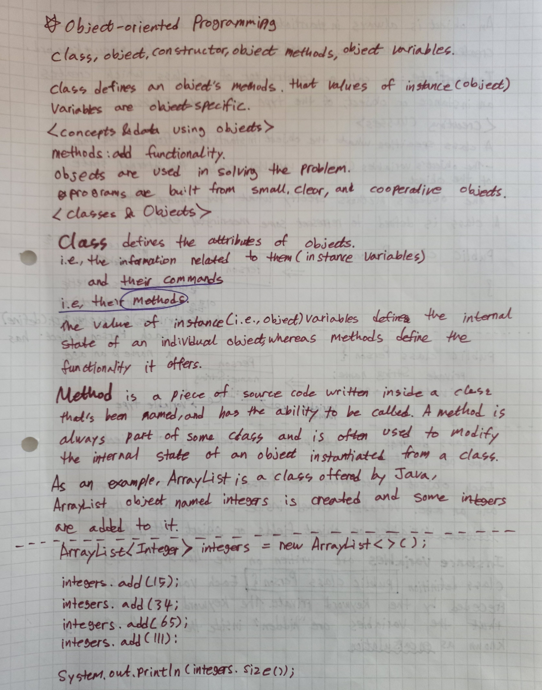
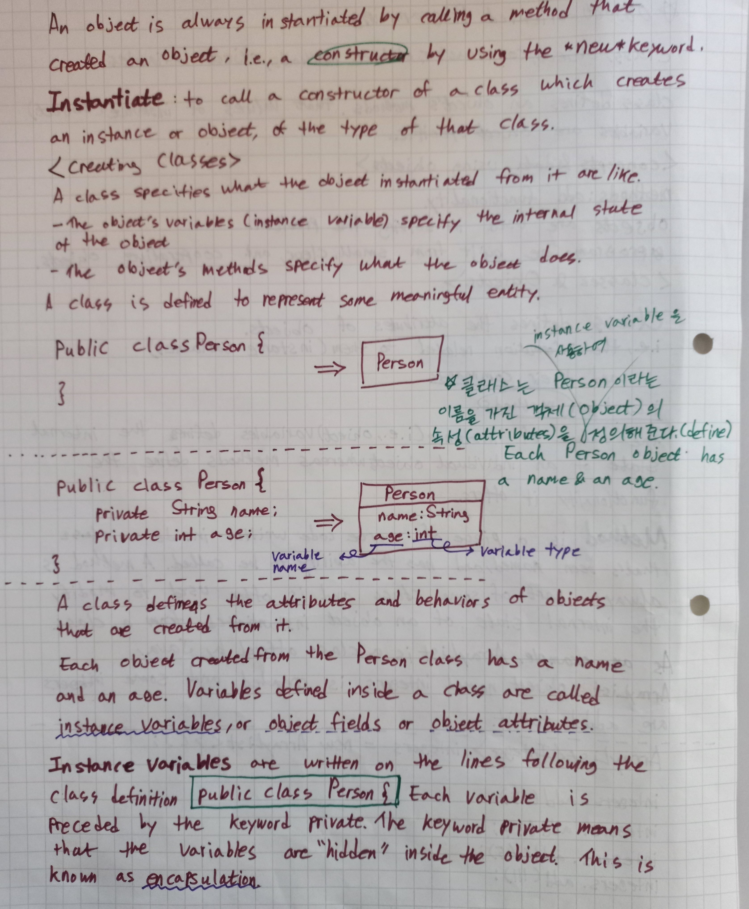
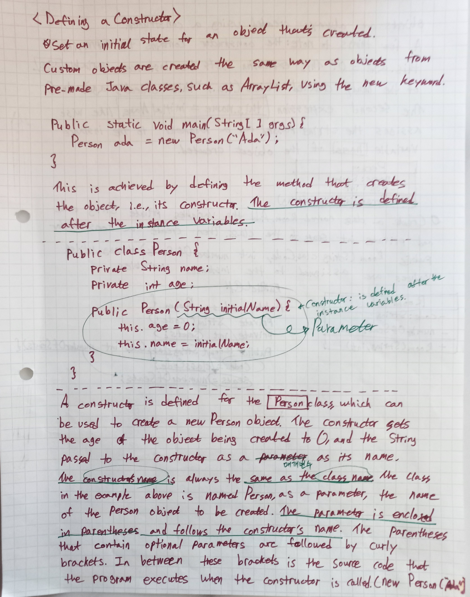
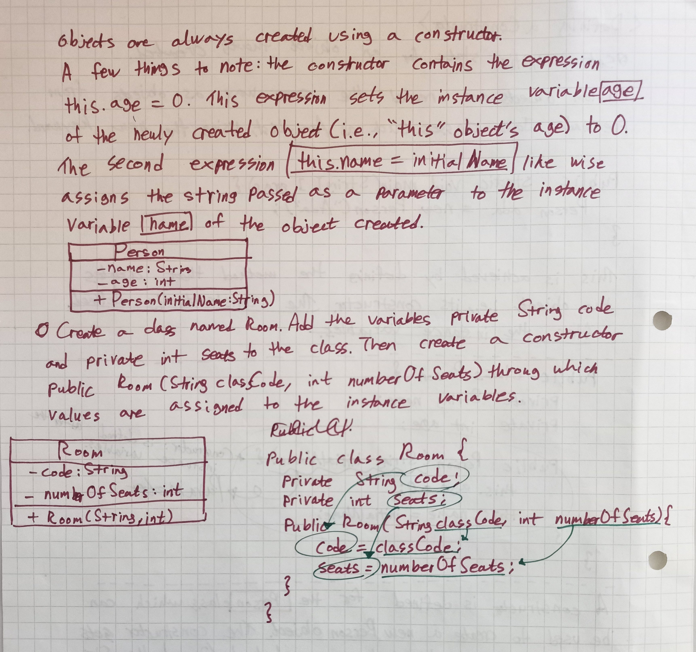
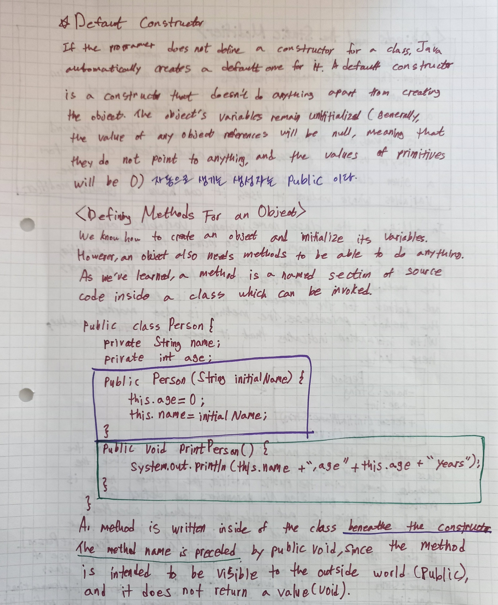
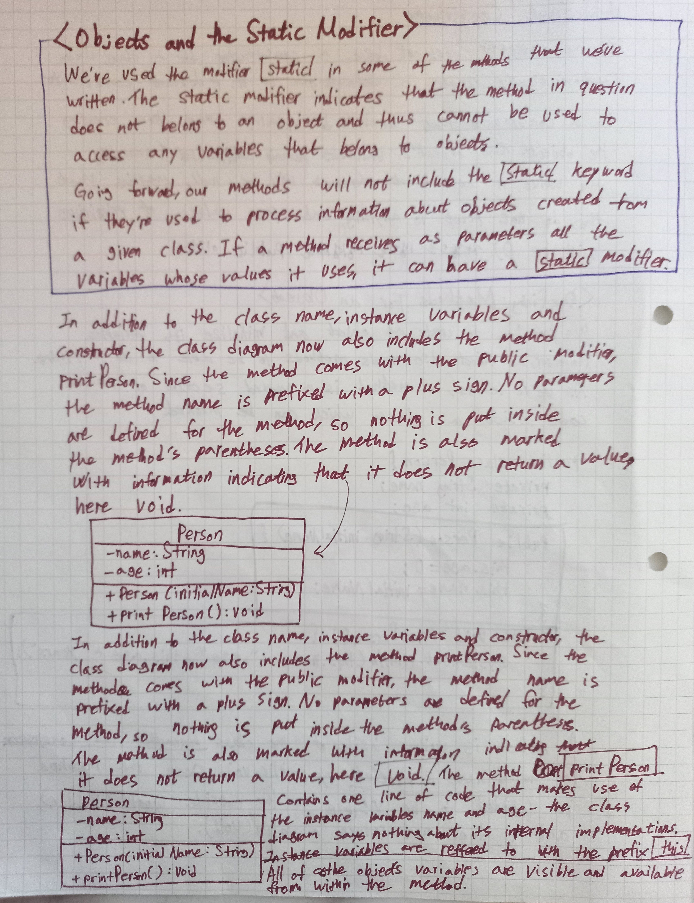
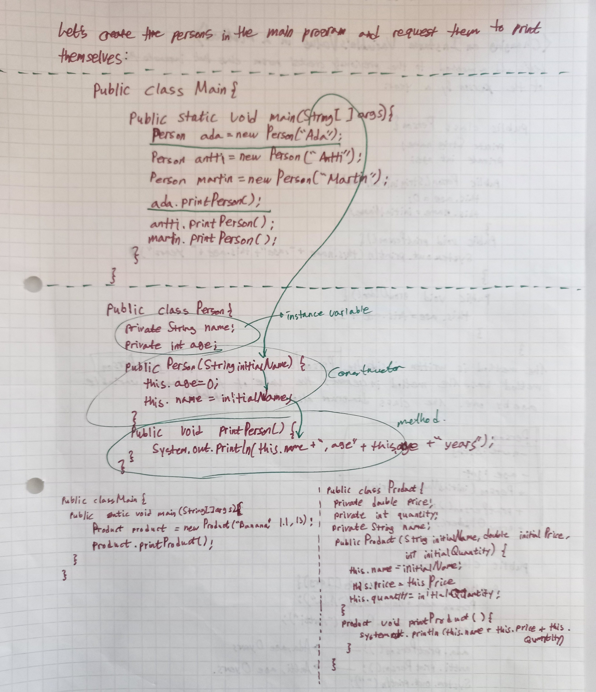
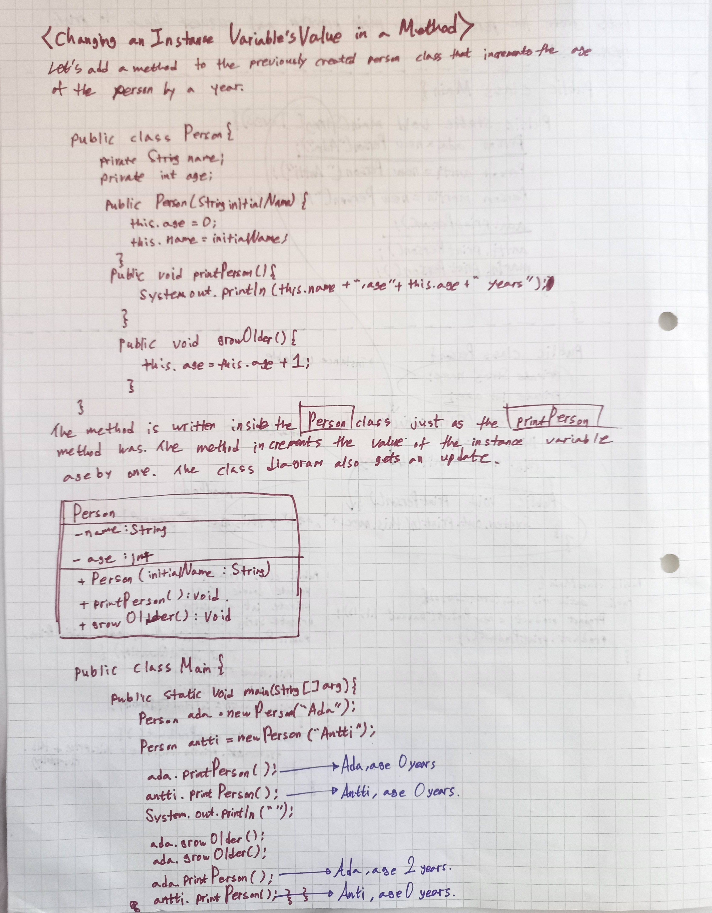
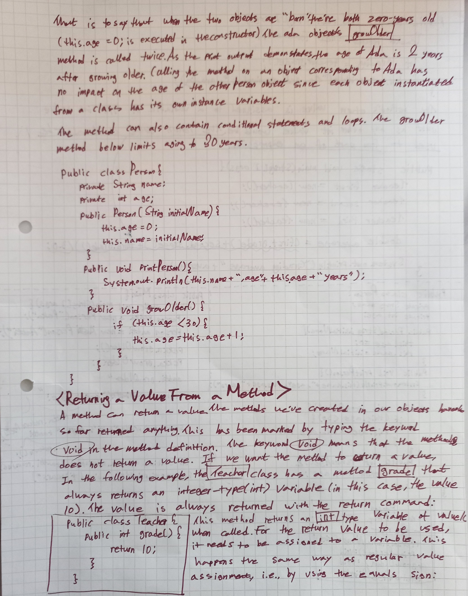

자바공부노트 페이지입니다.
자바개념을 정리를 해보았습니다.
공부자료는 제가 즐겨듣는 부경대학교 교수님의 유튜브플레이리스트8번의 자바객체 설명을 정리한 것입니다.
🖥 Java유튜브강의 보러가기
아래 자료는 핀란드교수의 MOOC수업자료입니다.
🖥 Java MOOC강의 보러가기클래스와 메서드
인스턴스화
생성자: 클래스 명과 동일하다.
객체변수에 대입이 되는 매개변수에 대한 설명
생성자를 설정하지 않았을때 기본값으로 설정되는 생성자의 특징: public을 기억할 것

리턴값이 없는(void) printPerson()메서드
객체변수값을 메서드를 이용하여 변경하기
리턴값이 있는 메서드
메인홈으로 돌아가기